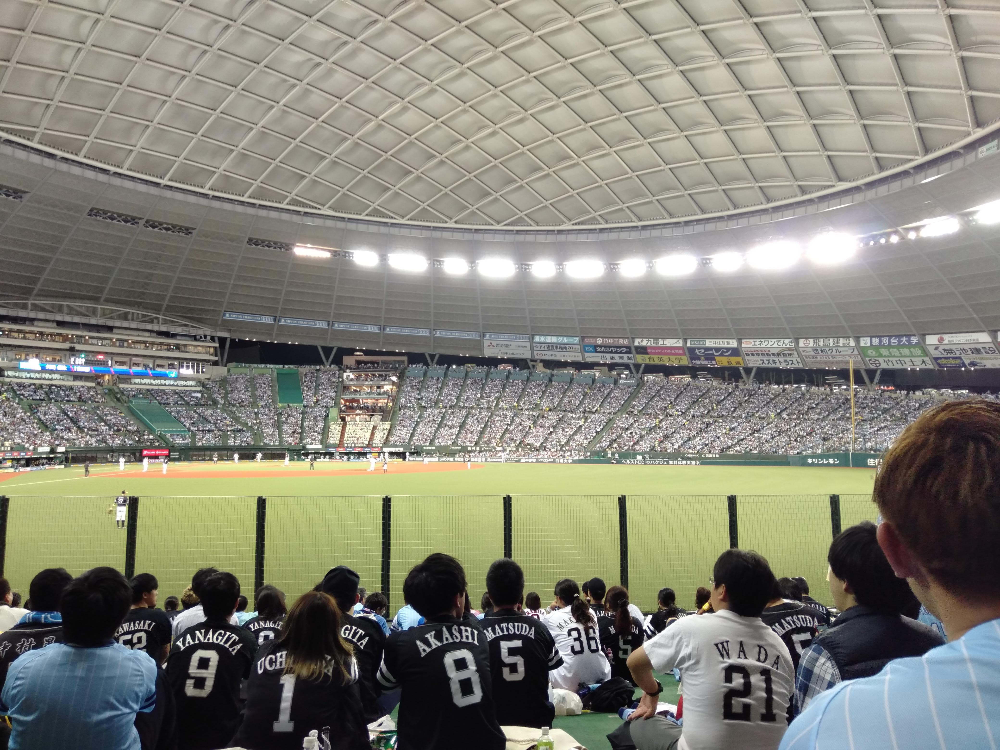
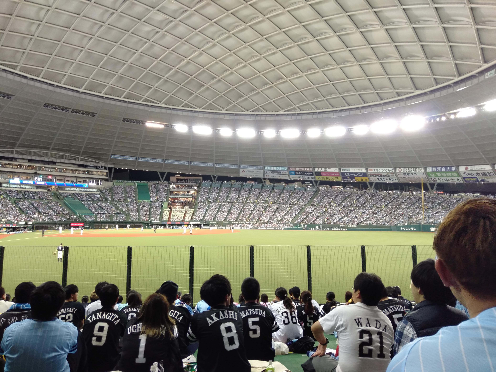
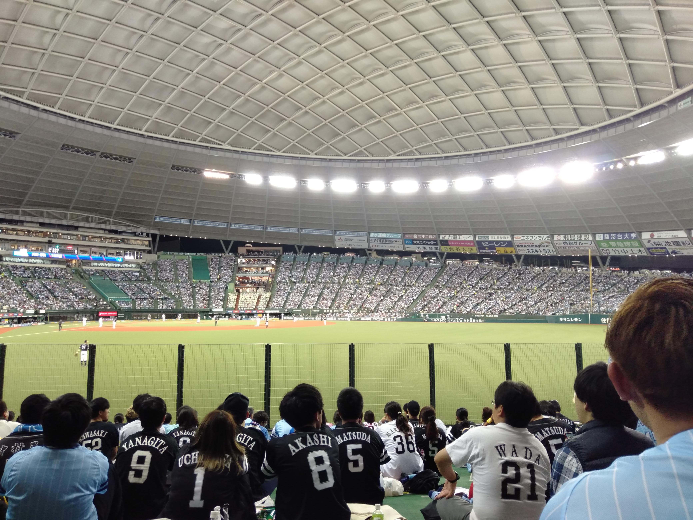

沿線さんぽ
歩いていて、とても心地の良い駅が多い点が特徴である。
以下、西武国分寺線を中心に、沿線さんぽをしている気分になれる魅力的な画像を提供する。いずれの写真も、筆者が撮影した。
メインページへ
運行エリア
運行車両
国分寺駅（SK01）
恋ヶ窪駅（SK02）
鷹の台駅（SK03）
西武球場前駅（SI41, SY03）

BACK TO THE TOP


 
BACK TO THE TOP

BACK TO THE TOP